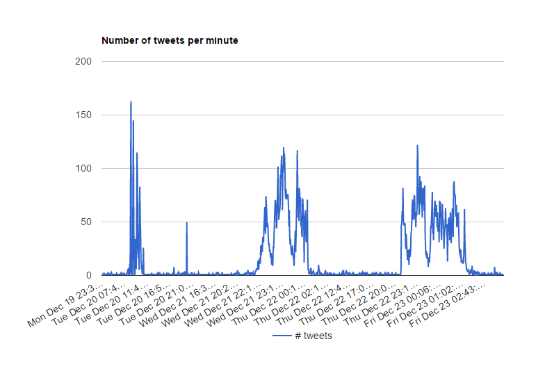

Hello World, I am Manos Kioutsoukis, a student at
University of Macedonia in the Department of Business Administration. The current webpage was designed in the context of e-Business, a subject on the last semester of my studies.
As an assignment we had to use Twitter API to collect tweets over a topic of our choice and then create a webpage written on HTML (& JavaScript if possible) to present the results of our study.
In order to get started I had to decide on a topic. For my assignment I have chosen to collect all the tweets having the keywords
#TheVoiceGr and
#RisingStarGr two Greek talents shows and find out which one is more popular. Of course having a Twitter account is a pre-requirement, though that is not the only thing needed to access tweets. For that purpose you have to create Twitter application and get hold of your unique keys and access tokens. You can easily do that on the Twitter’s
application page.
As long as Twitter does not provide a place to store tweets, finding one is the next issue you have to resolve. So the place I used is
MongoDB, a free NoSQL cloud hosting database. In order to achieve that you download and install a community server of MongoDB on your computer. After that, you have to keep an instance of the database running on your computer and so, Command prompt is used. While being in the directory where the MongoDB is installed, you simply type the command “mongod --rest --jsonp” and you are ready to store.
Now that you found a place to store tweets you should find a way to obtain them. There are two possible ways for us to get tweets, the Search API and the Streaming API. The first returns a collection of relevant tweets matching a specified query, while the later monitors a sample of tweets in real-time. I worked with the second one because it better fit my needs. Luckily, my
teacher saved too much effort collecting the tweets manually and gave us a program that would automatically collect and store tweets on our MongoDB. We simply had to update our personal information on txt file and use a Command Prompt to keep the program running. To do that you just write the command “java -jar TwitterCollector.jar”, while being in the directory where the package provided is saved. The only drawback of this setup is that you must keep your computer open all the time or you will not be able to stream and store any tweets.
Finally you need someone to host your webpage. My choice was
Github, , a free code hosting platform which provides version control and highly supports collaboration. Before you start writing your HTML code you must create an account and a repository and you are ready to go. There are many tutorials and guides to help you if you get confused at this point. I particularly used
stackoverflow to answer most of my questions concerning HTML coding and generally my assignment.
Unfortunately, I was not able to neither create two time series to compare the popularity of the shows nor use JavaScript to make my webpage interactive. Mainly, I tried to use
Google Charts to present my results and if possible auto-update them while my app streams and stores new tweets, with no luck though. What I did manage to present is the image given below. A graph with the number of both tweets aggregated per minute.

That will conclude my work. I hope sometime in the future I manage to update this page with better results. Special thanks to my teacher for making this possible.